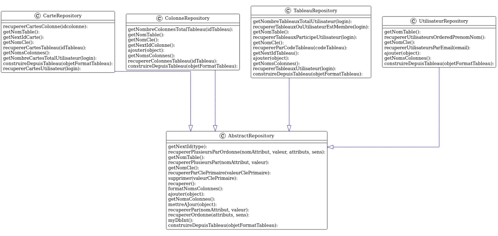
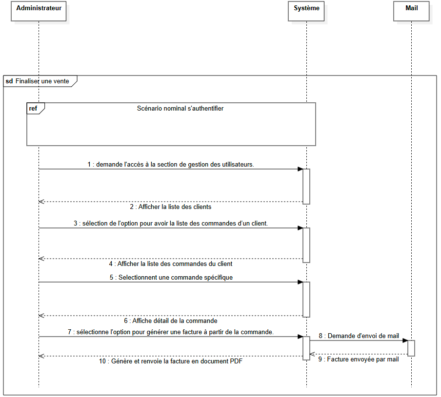

Compétence Optimiser
AC32.01 | Anticiper les résultats de diverses métriques
(temps d’exécution, occupation
mémoire, montée en charge…)
Cet apprentissage consiste à prévoir et évaluer les performances d’une application en mesurant,
entre autres, le temps d’exécution, l’utilisation mémoire et la capacité à supporter des charges
importantes.
CE2.04 (en justifiant les choix et validant les résultats)
Validation dans les projets :
Dans le cadre du projet Wisp Madness (Code Game Jam), le développement d’une application
interactive en temps réel a nécessité une anticipation et une optimisation des performances pour
garantir une expérience utilisateur fluide via des tests d’utilisation et des tests de limite
pour connaître la limite d’apparition d’entité. Par ailleurs, lors de mon stage chez Nikhil04,
il a fallu dimensionner l’architecture afin de supporter les pics d’affluence.
AC32.02 | Profiler, analyser et justifier le
comportement d’un code existant
Cette compétence consiste à utiliser des outils de
profilage et d’analyse afin d’identifier les
goulots d’étranglement et de justifier les choix techniques effectués pour optimiser les
performances du code.
CE2.04 (en justifiant les choix et
validant les résultats)
Validation dans les projets :
L’analyse d’un code existant dans le projet BoardHub
(SAE) a permis de proposer des améliorations
pertinentes et de renforcer la robustesse de l’application. L’application donnée lors de cette
SAE nous a conduit à analyser, réaliser des graphiques de structure pour comprendre et corriger
des bugs structurels. Ces analyses ont permis de détecter et retirer du code inutile (par
exemple, des requêtes non préparées), améliorant ainsi le code existant comme illustré dans
l’exemple suivant :

public function telemetry($a, $b, $c)
{
ConnexionUtilisateur::important($a, $b ? null : (($c + $a) > $a * $a ? $b : 24));
}
public static function important($x, $y)
{
// Je crois que ça ne marche pas hahahaha
// Je vais simplement retirer le code pour le moment
}
Il existe à travers les 4
classes: Cookie ; Session ;
ConnexionUtilisateur ; AbstractRepository avec respectivement les
fonctions : fun ; telemetry ; important ; myDbInt qui ne sont jamais appelées. Ces fonctions
sont un problème car elles
représentent du code mort qui ne fait qu’alourdir l’application. Par ailleurs, les fonctions
ajouter des classes :
ColonneRepository ; TableauRepository ; UtilisateurRepository ne font que déclencher une
exception.
AC32.03 | Choisir et utiliser des bibliothèques et
méthodes dédiées au domaine
d’application
(imagerie, immersion, intelligence artificielle, jeux vidéo, parallélisme,
calcul formel…)
Ce volet vise à sélectionner et exploiter les outils,
bibliothèques ou frameworks les plus
adaptés aux spécificités d’un domaine donné afin d’optimiser le développement de solutions
innovantes.
CE2.03 (en s’appuyant sur des schémas de
raisonnement)
Validation dans les projets :
Dans Wisp Madness, dont la nature imposait un
développement rapide d’une application ludique et
interactive, l’utilisation de logiciels faciles à prendre en main et performants a permis
d’utiliser un outil adapté aux contraintes de la Code Game Jam. Le logiciel choisi était Godot,
un outil léger, simple et efficace qui nous a permis d’avancer rapidement. Par ailleurs, lors
d’un cours de développement avancé, nous avons utilisé des ressources spécifiques pour aborder
le développement d’IA, ouvrant ainsi la voie aux prémices d’un projet d’autocompletion de texte.
Compétence Collaborer
AC36.01 | Organiser et partager une veille technologique
et informationnelle
Cette compétence implique de rechercher, organiser et
diffuser des informations pertinentes sur
les évolutions technologiques afin de rester à la pointe de l’innovation et de partager ces
connaissances au sein d’une équipe.
CE6.04 (en développant une communication
efficace et collaborative)
Validation dans le cours :
Lors d’un exercice en communication, mon groupe de quatre
a élaboré une veille sur divers sujets
(data et écologie, espace, jeux vidéo). Chaque semaine, nous nous réunissions pour collecter,
trier, analyser et synthétiser les informations, adoptant ainsi une démarche de veille
régulière.
Exemple de structure d’informations stockées
:
[Semaine des news]
[Titre de la news (pas forcément celui de l’article)]
[catégorie]
Résumé de l’article
Source : [hyperlien][numéro redirigeant vers le lien au format IEEE]
Exemple de news :
Semaine du 9
septembre 2024
Rentrée atmosphérique contrôlée par l’ESA
Espace
La mission Cluster de l'ESA, après 24 ans d'observation du bouclier magnétique de la Terre, se
termine avec la rentrée atmosphérique de son premier satellite, Salsa, au-dessus du Pacifique
Sud le 8 septembre 2024. Cette manœuvre, visant à réduire les débris spatiaux, marque une étape
vers des pratiques plus sûres et durables. Les trois autres satellites suivront en 2025 et 2026.
Source : ESA.[1]
Microsoft adopte le refroidissement liquide direct pour des datacenters plus écologiques
Data & écologie
Le 11 décembre 2024, Microsoft a annoncé que tous ses nouveaux centres de données seront équipés
de systèmes de refroidissement liquide direct (DLC) fonctionnant en circuit fermé, éliminant
l'évaporation de l'eau. L’initiative vise à réduire la consommation d'eau (plus de 125 millions
de litres par an par datacenter) et à améliorer le WUE en la rapprochant de zéro.
Source: dcmag.fr [39]
AC36.02 | Identifier les enjeux de l’économie de
l’innovation numérique
Il s’agit de comprendre l’impact des innovations
technologiques sur l’économie et d’identifier
les opportunités ainsi que les défis qu’elles représentent pour les organisations.
CE6.02 (en accompagnant la mise en œuvre
des évolutions informatiques)
Validation dans les projets :
Au cours de mon stage chez Nikhil04, l’analyse des
besoins a intégré une réflexion approfondie
sur les enjeux économiques du numérique (sécurité, expérience utilisateur, coûts matériels et
adaptation à un marché en évolution). Les technologies mises en œuvre étaient à la fois
récentes, évolutives et économiquement avantageuses.
Exemple :

Titre : Finaliser une vente
Résumé : L'administrateur finalise une vente pour un client.
Acteurs :
- Administrateur (principal)
- Client (secondaire)
Précondition : Le site est en ligne et l'utilisateur est authentifié.
Scénario nominal :
1. Le client achète un produit via un devis généré automatiquement.
2. L'administrateur demande l'accès à la section de gestion des utilisateurs.
3. Le système vérifie que l'utilisateur possède les droits d'administrateur.
4. L'administrateur sélectionne l'option pour avoir la liste des commandes d’un client.
5. L'administrateur sélectionne l'option pour voir le détail d’une commande.
6. Le système affiche les informations de la commande.
7. L'administrateur sélectionne l'option pour générer une facture à partir de la commande.
8. Le système génère et envoie la facture par email aux deux parties.
Enchaînements alternatifs :
A1 : Le client achète sans devis (démarre après le point 1 du scénario nominal)
2. L'administrateur demande l'accès à la section de gestion des utilisateurs.
3. Le système vérifie que l'utilisateur possède les droits d'administrateur.
4. L'administrateur sélectionne l'option pour avoir la liste des commandes d’un client.
5. L'administrateur sélectionne l'option pour générer une commande pour ce client.
6. L'administrateur saisit les produits achetés par le client et leur quantité.
7. L'administrateur soumet la demande de création d’une commande.
8. Le système affiche les informations de la commande créée.
9. L'administrateur sélectionne l'option pour générer une facture à partir de la commande.
10. Le système génère et envoie la facture par email aux deux parties.
AC36.03 | Guider la conduite du changement informatique au sein d’une organisation
Cette compétence vise à accompagner les transformations numériques en identifiant les leviers de
changement et en pilotant l’évolution des systèmes d’information.
CE6.02 (en accompagnant la mise en œuvre des évolutions informatiques)
Validation dans les projets :
Lors de mon stage chez Nikhil04, j’ai participé à l’intégration de nouvelles solutions
informatiques, soutenant le changement sur le plan technique et organisationnel, notamment en
formant les utilisateurs aux nouveaux outils et processus. Les utilisateurs, habitués aux
documents papier, ont mis du temps à s’adapter à la conversion numérique.
AC36.04 | Accompagner le management de projet informatique
Il s’agit de collaborer étroitement avec les équipes de management dans la planification,
l’organisation et la coordination des projets informatiques.
CE6.04 (en développant une communication efficace et collaborative)
Validation dans les projets :
Au cours de ma SAE Stageo et lors de mon alternance chez Lundi Matin, j’ai activement participé à
la planification et à la coordination de projets (analyse de correctifs, réunions quotidiennes,
comptes rendus réguliers), facilitant ainsi la collaboration et l’identification rapide des
obstacles.
Compétence Réaliser
AC31.01 | Choisir et implémenter les architectures adaptées
Cet apprentissage consiste à analyser les besoins d’un projet pour sélectionner et mettre en
œuvre l’architecture logicielle la plus pertinente (ex. architecture MVC pour le web).
CE1.06 (en choisissant les ressources techniques appropriées)
Validation dans les projets :
Lors de mon stage chez Nikhil04, l’adoption de l’architecture MVC a permis de séparer les
préoccupations (présentation, logique métier, accès aux données), facilitant la maintenance et
l’évolution de l’application. De plus, lors d’une code game jam, nous avons opté pour une
architecture simple et efficace, qui, malgré son manque d’optimisation, nous a permis d’avancer
rapidement malgré des délais courts.
AC31.02 | Faire évoluer une application existante
Cette compétence permet de prendre en charge la maintenance et l’évolution d’un logiciel en
production, que ce soit par l’ajout de nouvelles fonctionnalités ou l’optimisation du code
existant.
CE1.04 (en veillant à la qualité du code et à sa documentation)
Validation dans les projets :
Le projet BoardHub a impliqué la mise à jour de fonctionnalités et l’amélioration des
performances pour répondre aux besoins du client. Lors de mon alternance, j’ai également
contribué à la maintenance du code en corrigeant des erreurs et en intégrant des mises à jour
technologiques, assurant ainsi la pérennité de l’application.
AC31.03 | Intégrer des solutions dans un environnement de production
Ce volet concerne la capacité à déployer et intégrer des applications dans un environnement réel,
en garantissant leur stabilité, leur sécurité et leur pérennité.
CE1.01 (en respectant les besoins décrits par le client)
Validation dans les projets :
Lors de mon alternance chez Lundi Matin, j’ai participé à l’intégration et au déploiement de
correctifs et d’évolutions informatiques pour un environnement de production client. J’ai
également déployé des mises à jour sur le produit principal, assurant ainsi une amélioration
continue du site.